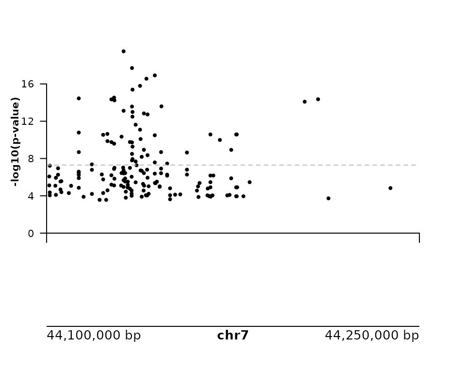

IGVF background
The Impact of Genomic Variation on Function (IGVF) Consortium,
aims to understand how genomic variation affects genome function, which in turn impacts phenotype. The NHGRI is funding this collaborative program that brings together teams of investigators who will use state-of-the-art experimental and computational approaches to model, predict, characterize and map genome function, how genome function shapes phenotype, and how these processes are affected by genomic variation. These joint efforts will produce a catalog of the impact of genomic variants on genome function and phenotypes.
The IGVF Catalog described in the last sentence is available
through a number of interfaces, including a web interface as well as two
programmatic interfaces. In addition, there is a Data Portal,
where raw and processed data can be downloaded, with its own web interface and client library for
R. This package, rigvf, focuses on the Catalog and
not the Data Portal.
Knowledge graph of variant function
The IGVF Catalog is a form of knowledge graph, where the nodes are biological entities such as variants, genes, pathways, etc. and edges are relationships between such nodes, e.g. empirically measured effects of variants on cis-regulatory elements (CREs) or on transcripts and proteins. These edges may have metadata including information about cell type context and information about how the association was measured, e.g. which experiment or predictive model.
The rigvf package
This package provides access to some of the IGVF Catalog from within R/Bioconductor. Currently, limited functionality is implemented, with priority towards applications and integration with Bioconductor functionality. However, the source code and internal functions can also be used to build one-off querying functions.
Catalog API
The IGVF Catalog offers two programmatic interfaces, the Catalog API and an ArangoDb interface, described further below. The Catalog API is preferred, with optimized queries of relevant information. Queries are simple REST requests implemented using the httr2 package. Here we query variants associated with “GCK”; one could also use, e.g., Ensembl identifiers.
library(rigvf)
rigvf::gene_variants(gene_name = "GCK")
#> # A tibble: 25 × 9
#> `sequence variant` gene label log10pvalue effect_size source source_url
#> <chr> <chr> <chr> <dbl> <dbl> <chr> <chr>
#> 1 variants/8c6a683829bcb… gene… eQTL 4.89 0.274 GTEx https://s…
#> 2 variants/cf796b5a16212… gene… eQTL 5.76 0.221 GTEx https://s…
#> 3 variants/9a36af4633321… gene… eQTL 6.17 -0.266 GTEx https://s…
#> 4 variants/2fefe07a0750b… gene… eQTL 3.69 0.158 GTEx https://s…
#> 5 variants/ab6df1152a643… gene… eQTL 16.9 -0.353 GTEx https://s…
#> 6 variants/92833b52621e5… gene… eQTL 4.86 -0.170 GTEx https://s…
#> 7 variants/bceca4e6ac3cd… gene… eQTL 4.63 -0.340 GTEx https://s…
#> 8 variants/0a8ba63e5451a… gene… eQTL 4.94 0.215 GTEx https://s…
#> 9 variants/80f639e0da643… gene… eQTL 6.59 -0.330 GTEx https://s…
#> 10 variants/7f4ca6f1cfd70… gene… eQTL 4.10 -0.165 GTEx https://s…
#> # ℹ 15 more rows
#> # ℹ 2 more variables: biological_context <chr>, chr <chr>Note that we only receive a limited number of responses. We can
change both the page of responses we receive and the
limit per page:
rigvf::gene_variants(gene_name = "GCK", page=1L)
#> # A tibble: 25 × 9
#> `sequence variant` gene label log10pvalue effect_size source source_url
#> <chr> <chr> <chr> <dbl> <dbl> <chr> <chr>
#> 1 variants/89906a3ef6b64… gene… eQTL 6.28 -0.185 GTEx https://s…
#> 2 variants/8f43caa04db1a… gene… eQTL 4.05 -0.208 GTEx https://s…
#> 3 variants/92833b52621e5… gene… eQTL 5.90 -0.279 GTEx https://s…
#> 4 variants/0dbbe5c1400bd… gene… eQTL 4.45 0.185 GTEx https://s…
#> 5 variants/2d121dd1f87bc… gene… eQTL 5.46 0.209 GTEx https://s…
#> 6 variants/80f639e0da643… gene… eQTL 6.45 -0.306 GTEx https://s…
#> 7 variants/80087ed4fa460… gene… eQTL 13.1 -0.332 GTEx https://s…
#> 8 variants/5fdfcba3af0b3… gene… eQTL 14.1 0.364 GTEx https://s…
#> 9 variants/8297f73079320… gene… eQTL 11.1 -0.321 GTEx https://s…
#> 10 variants/629c8018822de… gene… eQTL 8.50 -0.217 GTEx https://s…
#> # ℹ 15 more rows
#> # ℹ 2 more variables: biological_context <chr>, chr <chr>
rigvf::gene_variants(gene_name = "GCK", limit=50L)
#> # A tibble: 50 × 9
#> `sequence variant` gene label log10pvalue effect_size source source_url
#> <chr> <chr> <chr> <dbl> <dbl> <chr> <chr>
#> 1 variants/8c6a683829bcb… gene… eQTL 4.89 0.274 GTEx https://s…
#> 2 variants/cf796b5a16212… gene… eQTL 5.76 0.221 GTEx https://s…
#> 3 variants/9a36af4633321… gene… eQTL 6.17 -0.266 GTEx https://s…
#> 4 variants/2fefe07a0750b… gene… eQTL 3.69 0.158 GTEx https://s…
#> 5 variants/ab6df1152a643… gene… eQTL 16.9 -0.353 GTEx https://s…
#> 6 variants/92833b52621e5… gene… eQTL 4.86 -0.170 GTEx https://s…
#> 7 variants/bceca4e6ac3cd… gene… eQTL 4.63 -0.340 GTEx https://s…
#> 8 variants/0a8ba63e5451a… gene… eQTL 4.94 0.215 GTEx https://s…
#> 9 variants/80f639e0da643… gene… eQTL 6.59 -0.330 GTEx https://s…
#> 10 variants/7f4ca6f1cfd70… gene… eQTL 4.10 -0.165 GTEx https://s…
#> # ℹ 40 more rows
#> # ℹ 2 more variables: biological_context <chr>, chr <chr>We can also pass thresholds on the negative log10 p-value or the
effect size, using the following letter combinations,
gt (>), gte (>=), lt (<), lte (<=), followed by
a : and a value. See examples below:
rigvf::gene_variants(gene_name = "GCK", log10pvalue="gt:5.0")
#> # A tibble: 25 × 9
#> `sequence variant` gene label log10pvalue effect_size source source_url
#> <chr> <chr> <chr> <dbl> <dbl> <chr> <chr>
#> 1 variants/cf796b5a16212… gene… eQTL 5.76 0.221 GTEx https://s…
#> 2 variants/9a36af4633321… gene… eQTL 6.17 -0.266 GTEx https://s…
#> 3 variants/ab6df1152a643… gene… eQTL 16.9 -0.353 GTEx https://s…
#> 4 variants/80f639e0da643… gene… eQTL 6.59 -0.330 GTEx https://s…
#> 5 variants/8fda8a39c0e19… gene… eQTL 5.01 -0.462 GTEx https://s…
#> 6 variants/9f9220f88fd20… gene… eQTL 9.76 -0.317 GTEx https://s…
#> 7 variants/1542d8dc4347e… gene… eQTL 6.88 -0.197 GTEx https://s…
#> 8 variants/6267c5fed3521… gene… eQTL 6.26 -0.240 GTEx https://s…
#> 9 variants/24e837efe47bc… gene… eQTL 6.07 0.213 GTEx https://s…
#> 10 variants/31b41a47c007f… gene… eQTL 15.4 -0.361 GTEx https://s…
#> # ℹ 15 more rows
#> # ℹ 2 more variables: biological_context <chr>, chr <chr>
rigvf::gene_variants(gene_name = "GCK", effect_size="gt:0.5")
#> # A tibble: 13 × 9
#> `sequence variant` gene label log10pvalue effect_size source source_url
#> <chr> <chr> <chr> <dbl> <dbl> <chr> <chr>
#> 1 variants/2e1a52f2551d6… gene… eQTL 5.08 0.502 GTEx https://s…
#> 2 variants/513df90562f2e… gene… eQTL 3.68 0.628 GTEx https://s…
#> 3 variants/ba959d0d02884… gene… eQTL 3.90 0.515 GTEx https://s…
#> 4 variants/965035c14bc1a… gene… eQTL 3.65 0.548 GTEx https://s…
#> 5 variants/e0d388dd97ea5… gene… eQTL 5.74 0.541 GTEx https://s…
#> 6 variants/a2362bdd461e7… gene… eQTL 4.63 0.770 GTEx https://s…
#> 7 variants/a4919ef974d2c… gene… eQTL 4.17 0.732 GTEx https://s…
#> 8 variants/c117f48f3e28e… gene… eQTL 3.98 0.589 GTEx https://s…
#> 9 variants/f72c43e10b242… gene… eQTL 4.03 0.581 GTEx https://s…
#> 10 variants/ba959d0d02884… gene… eQTL 4.09 0.502 GTEx https://s…
#> 11 variants/7fc7d0a82445b… gene… eQTL 5.36 0.552 GTEx https://s…
#> 12 variants/74b4b8f7b37f5… gene… eQTL 4.13 0.604 GTEx https://s…
#> 13 variants/829ce03f1d460… gene… eQTL 4.50 0.631 GTEx https://s…
#> # ℹ 2 more variables: biological_context <chr>, chr <chr>The help page ?catalog_queries outlines other available
user-facing functions.
Note that nested columns in the response can be widen-ed using tidyr. For example, when querying genomic elements that are associated with a gene, we get back nested output:
res <- rigvf::gene_elements(gene_id = "ENSG00000187961", verbose = TRUE)
res
#> # A tibble: 25 × 2
#> gene regions
#> <list> <list>
#> 1 <named list [5]> <named list [8]>
#> 2 <named list [5]> <named list [8]>
#> 3 <named list [5]> <named list [8]>
#> 4 <named list [5]> <named list [8]>
#> 5 <named list [5]> <named list [8]>
#> 6 <named list [5]> <named list [8]>
#> 7 <named list [5]> <named list [8]>
#> 8 <named list [5]> <named list [8]>
#> 9 <named list [5]> <named list [8]>
#> 10 <named list [5]> <named list [8]>
#> # ℹ 15 more rows
res |>
dplyr::select(`regions`) |>
tidyr::unnest_wider(`regions`)
#> # A tibble: 25 × 8
#> id cell_type score model dataset enhancer_type enhancer_start
#> <chr> <chr> <dbl> <chr> <chr> <chr> <int>
#> 1 genomic_elements… hela 0.0244 ENCO… https:… accessible d… 1000976
#> 2 genomic_elements… cd4-posi… 0.0168 ENCO… https:… accessible d… 1000976
#> 3 genomic_elements… cd8-posi… 0.0271 ENCO… https:… accessible d… 1000976
#> 4 genomic_elements… esophagu… 0.0180 ENCO… https:… accessible d… 1000976
#> 5 genomic_elements… astrocyte 0.0188 ENCO… https:… accessible d… 1000976
#> 6 genomic_elements… endometr… 0.0156 ENCO… https:… accessible d… 1000976
#> 7 genomic_elements… ependyma… 0.0160 ENCO… https:… accessible d… 1000976
#> 8 genomic_elements… osteobla… 0.0109 ENCO… https:… accessible d… 1000976
#> 9 genomic_elements… macropha… 0.0137 ENCO… https:… accessible d… 1000976
#> 10 genomic_elements… astrocyte 0.0172 ENCO… https:… accessible d… 1000976
#> # ℹ 15 more rows
#> # ℹ 1 more variable: enhancer_end <int>GRanges-based queries
The functions elements() and
element_genes() take GRanges input ranges, and
elements() provides back the response as GRanges.
Note that IGVF uses hg38 and USCS-style chromosome names, e.g.,
chr1.
ArangoDB API
The ArangoDB API provides flexibility but requires greater understanding of Arango Query Language and the database schema. Documentation is available in the database under the ‘Support’ menu item ‘REST API’ tab using username ‘guest’ and password ‘guestigvfcatalog’.
The following directly queries the database for variants of an Ensembl gene id.
rigvf::db_gene_variants("ENSG00000106633", threshold = 0.85)
#> # A tibble: 1,000 × 14
#> `_key` `_id` `_from` `_to` `_rev` biological_context chr p_value
#> <chr> <chr> <chr> <chr> <chr> <chr> <chr> <dbl>
#> 1 a6cbc153279e78b… vari… varian… gene… _i42_… esophagus muscula… chr7 5.82e-12
#> 2 fe37460fd352499… vari… varian… gene… _i42_… esophagus muscula… chr7 3.55e- 5
#> 3 541cb07e388227c… vari… varian… gene… _i42_… esophagus muscula… chr7 9.43e-12
#> 4 f926f23ed97a1ae… vari… varian… gene… _i42_… esophagus muscula… chr7 9.43e-12
#> 5 d4ed70a043d0f18… vari… varian… gene… _i42_… esophagus muscula… chr7 1.41e- 4
#> 6 52abc832332dc09… vari… varian… gene… _i42_… esophagus muscula… chr7 1.41e- 4
#> 7 4600cd627888076… vari… varian… gene… _i42_… esophagus muscula… chr7 4.17e-12
#> 8 68592e5fefff525… vari… varian… gene… _i42_… esophagus muscula… chr7 1.41e- 4
#> 9 0642a7286da19b2… vari… varian… gene… _i42_… esophagus muscula… chr7 3.58e- 5
#> 10 b2b44a8a0e56c9b… vari… varian… gene… _i42_… esophagus muscula… chr7 2.94e- 5
#> # ℹ 990 more rows
#> # ℹ 6 more variables: log10pvalue <dbl>, effect_size <dbl>, pval_beta <dbl>,
#> # label <chr>, source <chr>, source_url <chr>The AQL is
aql <- system.file(package = "rigvf", "aql", "gene_variants.aql")
readLines(aql) |> noquote()
#> [1] FOR l IN variants_genes
#> [2] FILTER l._to == @geneid
#> [3] FILTER l.`log10pvalue` > @threshold
#> [4] RETURN lThe help page ?db_queries outlines other available
user-facing functions. See ?arango for more
developer-oriented information.
Use with Bioconductor
Compute overlap with plyranges
We can query genomic elements using elements() and then
compute overlaps with the plyranges package as below. See the
plyranges package
documentation for more examples.
library(plyranges)
rng <- data.frame(seqnames="chr1", start=10e6+1, end=10.1e6) |>
as_granges()
e <- rigvf::elements(rng, limit=200L) |>
plyranges::filter(source != "ENCODE_EpiRaction")
e
#> GRanges object with 106 ranges and 5 metadata columns:
#> seqnames ranges strand | name source_annotation
#> <Rle> <IRanges> <Rle> | <character> <character>
#> [1] chr1 10001018-10001351 * | EH38E1317660 dELS: distal Enhance..
#> [2] chr1 10013307-10013640 * | EH38E1317663 dELS: distal Enhance..
#> [3] chr1 10014094-10014261 * | EH38E1317664 dELS: distal Enhance..
#> [4] chr1 10018931-10019279 * | EH38E1317668 dELS: distal Enhance..
#> [5] chr1 10019632-10019888 * | EH38E1317669 CA-CTCF: chromatin a..
#> ... ... ... ... . ... ...
#> [102] chr1 10045614-10045768 * | EH38E3954155 dELS: distal Enhance..
#> [103] chr1 10064932-10065090 * | EH38E3954156 dELS: distal Enhance..
#> [104] chr1 10080547-10080876 * | EH38E3954157 TF: TF binding
#> [105] chr1 10088561-10088910 * | EH38E3954158 TF: TF binding
#> [106] chr1 10099598-10099944 * | EH38E3954159 CA: chromatin access..
#> type source source_url
#> <character> <character> <character>
#> [1] candidate cis regula.. ENCODE_SCREEN (ccREs) https://data.igvf.or..
#> [2] candidate cis regula.. ENCODE_SCREEN (ccREs) https://data.igvf.or..
#> [3] candidate cis regula.. ENCODE_SCREEN (ccREs) https://data.igvf.or..
#> [4] candidate cis regula.. ENCODE_SCREEN (ccREs) https://data.igvf.or..
#> [5] candidate cis regula.. ENCODE_SCREEN (ccREs) https://data.igvf.or..
#> ... ... ... ...
#> [102] candidate cis regula.. ENCODE_SCREEN (ccREs) https://data.igvf.or..
#> [103] candidate cis regula.. ENCODE_SCREEN (ccREs) https://data.igvf.or..
#> [104] candidate cis regula.. ENCODE_SCREEN (ccREs) https://data.igvf.or..
#> [105] candidate cis regula.. ENCODE_SCREEN (ccREs) https://data.igvf.or..
#> [106] candidate cis regula.. ENCODE_SCREEN (ccREs) https://data.igvf.or..
#> -------
#> seqinfo: 1 sequence from hg38 genome; no seqlengths
tiles <- tile_ranges(rng, width=10e3) %>%
plyranges::select(-partition) %>%
plyranges::mutate(id = letters[seq_along(.)])
# count overlaps of central basepair of elements in tiles
e |>
plyranges::anchor_center() |>
plyranges::mutate(width = 1) |>
plyranges::join_overlap_left(tiles) |>
tibble::as_tibble() |>
dplyr::count(id)
#> # A tibble: 10 × 2
#> id n
#> <chr> <int>
#> 1 a 6
#> 2 b 13
#> 3 c 10
#> 4 d 15
#> 5 e 11
#> 6 f 15
#> 7 g 12
#> 8 h 12
#> 9 i 7
#> 10 j 5Plot variants with plotgardener
Below we show a simple example of plotting variants and elements in a gene context, using the plotgardener package.
First selecting some variants around the gene GCK (reminder
that we only obtain the first limit number of variants, see
?catalog_queries for more details).
# up to 200 variants:
v <- rigvf::gene_variants(gene_name = "GCK", limit=200L, verbose=TRUE) |>
dplyr::select(-c(gene, chr, source, source_url)) |>
tidyr::unnest_wider(`sequence variant`) |>
dplyr::rename(seqnames = chr) |>
dplyr::mutate(start = pos + 1, end = pos + 1) |>
as_granges()We then load plotgardener and define some default parameters.
library(plotgardener)
par <- pgParams(
chrom = "chr7",
chromstart = 44.1e6,
chromend = 44.25e6,
assembly = "hg38",
just = c("left", "bottom")
)Renaming some columns:
v_for_plot <- v |>
plyranges::select(snp = rsid, p = log10pvalue, effect_size)To match with the correct gene annotation, we could explicitly define
the transcript database using plotgardener::assembly(),
where we would provide a database built by running
GenomicFeatures::makeTxDbFromGFF() on a GENCODE GTF file.
Here we use one of the standard hg38 TxDb with UCSC-style chromosome
names.
library(TxDb.Hsapiens.UCSC.hg38.knownGene)
#> Loading required package: GenomicFeatures
#> Loading required package: AnnotationDbi
#> Loading required package: Biobase
#> Welcome to Bioconductor
#>
#> Vignettes contain introductory material; view with
#> 'browseVignettes()'. To cite Bioconductor, see
#> 'citation("Biobase")', and for packages 'citation("pkgname")'.
#>
#> Attaching package: 'AnnotationDbi'
#> The following object is masked from 'package:plyranges':
#>
#> selectBelow we build the page and populate it with annotation from the TxDb used by plotgardener and from IGVF Catalog.
pageCreate(width = 5, height = 4, showGuides = FALSE)
plotGenes(
params = par, x = 0.5, y = 3.5, width = 4, height = 1
)
#> Warning: `org.Hs.eg.db` not available. Please load to plot genes or
#> transcripts.
#> genes[genes1]
plotGenomeLabel(
params = par,
x = 0.5, y = 3.5, length = 4,
just = c("left", "top")
)
#> genomeLabel[genomeLabel1]
mplot <- plotManhattan(
params = par, x = 0.5, y = 2.5, width = 4, height = 2,
v_for_plot, trans = "",
sigVal = -log10(5e-8), sigLine = TRUE, col = "grey", lty = 2
)
#> manhattan[manhattan1]
annoYaxis(
plot = mplot, at=0:4 * 4, axisLine = TRUE, fontsize = 8
)
#> yaxis[yaxis1]
annoXaxis(
plot = mplot, axisLine = TRUE, label = FALSE
)
#> xaxis[xaxis1]
plotText(
params = par,
label = "-log10(p-value)", x = 0.2, y = 2, rot = 90,
fontsize = 8, fontface = "bold",
default.units = "inches"
)
#> text[text1]Session info
sessionInfo()
#> R version 4.4.2 (2024-10-31)
#> Platform: x86_64-pc-linux-gnu
#> Running under: Ubuntu 24.04.1 LTS
#>
#> Matrix products: default
#> BLAS: /usr/lib/x86_64-linux-gnu/openblas-pthread/libblas.so.3
#> LAPACK: /usr/lib/x86_64-linux-gnu/openblas-pthread/libopenblasp-r0.3.26.so; LAPACK version 3.12.0
#>
#> locale:
#> [1] LC_CTYPE=C.UTF-8 LC_NUMERIC=C LC_TIME=C.UTF-8
#> [4] LC_COLLATE=C.UTF-8 LC_MONETARY=C.UTF-8 LC_MESSAGES=C.UTF-8
#> [7] LC_PAPER=C.UTF-8 LC_NAME=C LC_ADDRESS=C
#> [10] LC_TELEPHONE=C LC_MEASUREMENT=C.UTF-8 LC_IDENTIFICATION=C
#>
#> time zone: UTC
#> tzcode source: system (glibc)
#>
#> attached base packages:
#> [1] stats4 stats graphics grDevices utils datasets methods
#> [8] base
#>
#> other attached packages:
#> [1] TxDb.Hsapiens.UCSC.hg38.knownGene_3.20.0
#> [2] GenomicFeatures_1.58.0
#> [3] AnnotationDbi_1.68.0
#> [4] Biobase_2.66.0
#> [5] plotgardener_1.12.0
#> [6] plyranges_1.26.0
#> [7] GenomicRanges_1.58.0
#> [8] GenomeInfoDb_1.42.3
#> [9] IRanges_2.40.1
#> [10] S4Vectors_0.44.0
#> [11] BiocGenerics_0.52.0
#> [12] rigvf_0.0.7
#>
#> loaded via a namespace (and not attached):
#> [1] tidyselect_1.2.1 blob_1.2.4
#> [3] dplyr_1.1.4 Biostrings_2.74.1
#> [5] bitops_1.0-9 fastmap_1.2.0
#> [7] RCurl_1.98-1.16 GenomicAlignments_1.42.0
#> [9] XML_3.99-0.18 digest_0.6.37
#> [11] lifecycle_1.0.4 KEGGREST_1.46.0
#> [13] RSQLite_2.3.9 magrittr_2.0.3
#> [15] compiler_4.4.2 rlang_1.1.5
#> [17] sass_0.4.9 tools_4.4.2
#> [19] utf8_1.2.4 yaml_2.3.10
#> [21] data.table_1.16.4 rtracklayer_1.66.0
#> [23] knitr_1.49 S4Arrays_1.6.0
#> [25] bit_4.5.0.1 curl_6.2.1
#> [27] DelayedArray_0.32.0 RColorBrewer_1.1-3
#> [29] abind_1.4-8 BiocParallel_1.40.0
#> [31] withr_3.0.2 purrr_1.0.4
#> [33] desc_1.4.3 grid_4.4.2
#> [35] colorspace_2.1-1 Rhdf5lib_1.28.0
#> [37] ggplot2_3.5.1 scales_1.3.0
#> [39] SummarizedExperiment_1.36.0 cli_3.6.4
#> [41] rmarkdown_2.29 crayon_1.5.3
#> [43] ragg_1.3.3 generics_0.1.3
#> [45] httr_1.4.7 rjson_0.2.23
#> [47] DBI_1.2.3 cachem_1.1.0
#> [49] rhdf5_2.50.2 zlibbioc_1.52.0
#> [51] parallel_4.4.2 ggplotify_0.1.2
#> [53] XVector_0.46.0 restfulr_0.0.15
#> [55] matrixStats_1.5.0 vctrs_0.6.5
#> [57] yulab.utils_0.2.0 Matrix_1.7-1
#> [59] jsonlite_1.9.0 gridGraphics_0.5-1
#> [61] bit64_4.6.0-1 systemfonts_1.2.1
#> [63] strawr_0.0.92 tidyr_1.3.1
#> [65] jquerylib_0.1.4 glue_1.8.0
#> [67] pkgdown_2.1.1 codetools_0.2-20
#> [69] gtable_0.3.6 BiocIO_1.16.0
#> [71] UCSC.utils_1.2.0 munsell_0.5.1
#> [73] tibble_3.2.1 pillar_1.10.1
#> [75] rhdf5filters_1.18.0 rappdirs_0.3.3
#> [77] htmltools_0.5.8.1 GenomeInfoDbData_1.2.13
#> [79] R6_2.6.1 httr2_1.1.0
#> [81] textshaping_1.0.0 evaluate_1.0.3
#> [83] lattice_0.22-6 png_0.1-8
#> [85] Rsamtools_2.22.0 memoise_2.0.1
#> [87] bslib_0.9.0 rjsoncons_1.3.1
#> [89] Rcpp_1.0.14 SparseArray_1.6.1
#> [91] whisker_0.4.1 xfun_0.51
#> [93] fs_1.6.5 MatrixGenerics_1.18.1
#> [95] pkgconfig_2.0.3